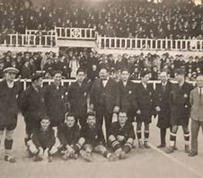
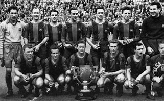
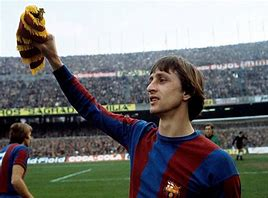
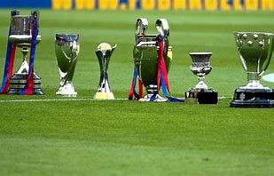
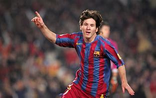

Imágenes Relevantes en la Historia del FC Barcelona
Inicio
Elementos Semánticos
Elementos de Texto
Imágenes
Tablas
Momentos Históricos del FC Barcelona

Fundación del FC Barcelona (1899)

Primera Liga Española Ganada (1929)

Era de Johan Cruyff en el Club (1970-1980)

El Sextete de Pep Guardiola (2009)

Lionel Messi